iQIYI is a video streaming platform with movies, TV series, shows, etc.
iQIYI Windows client app is a classic Win32 application to provide the mainstream services and native experience.
Notes
tsx) developing desktop app.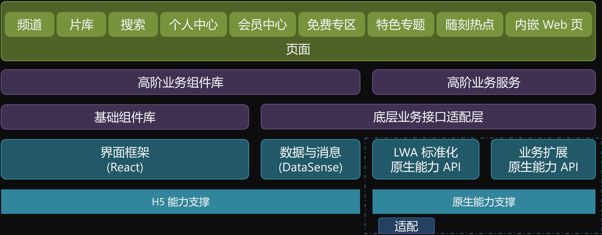
LWA Web native PC app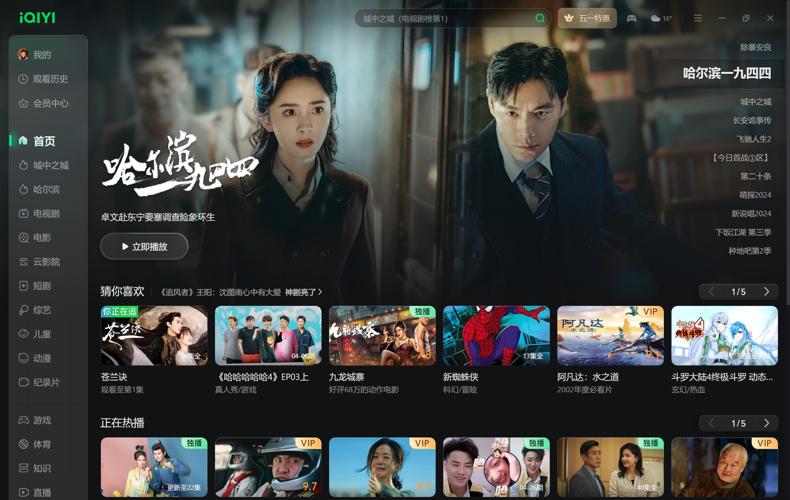
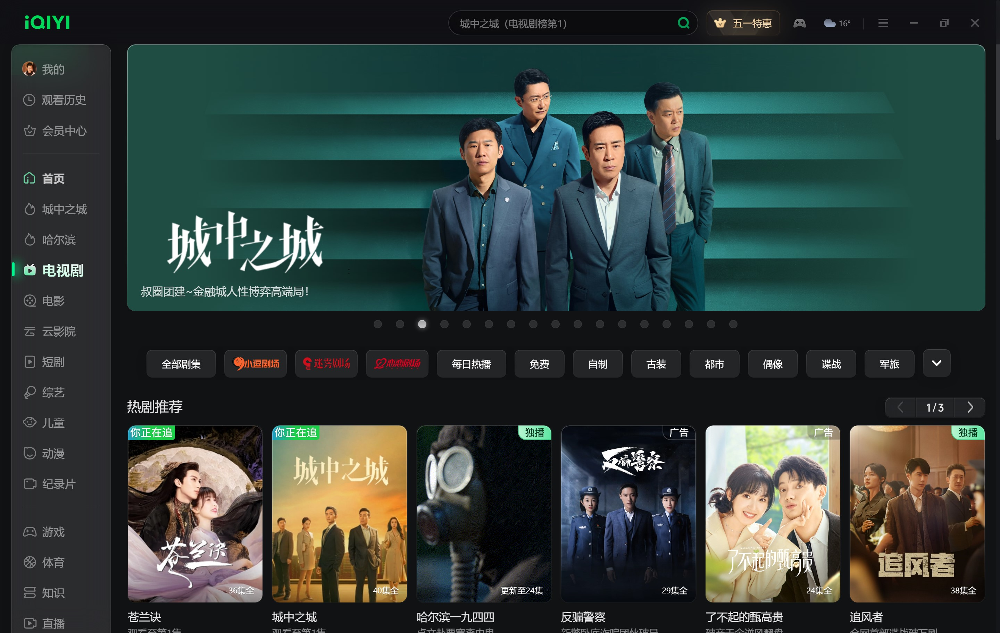
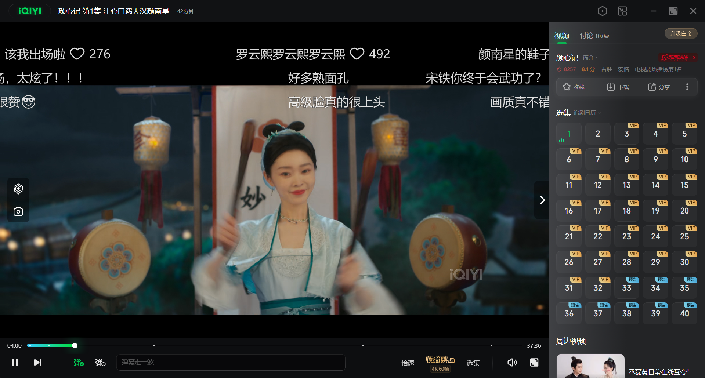
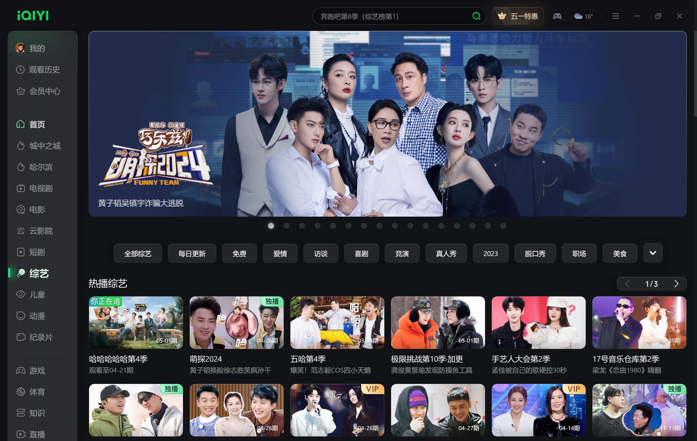
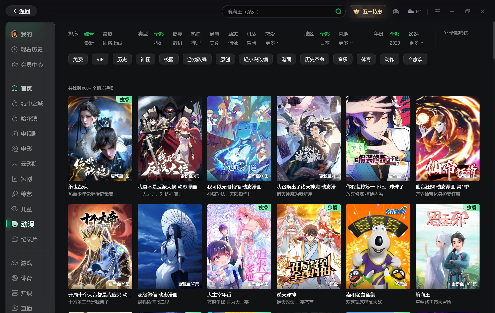
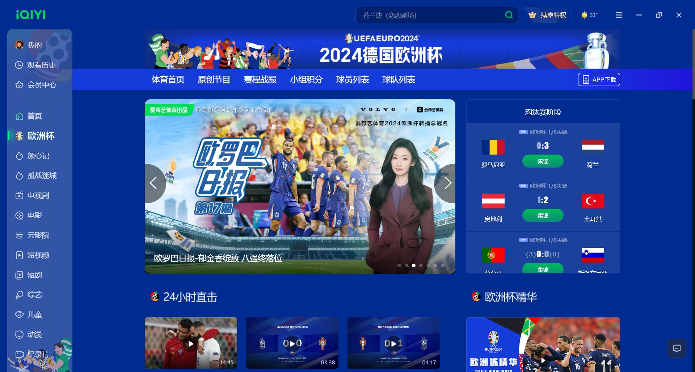
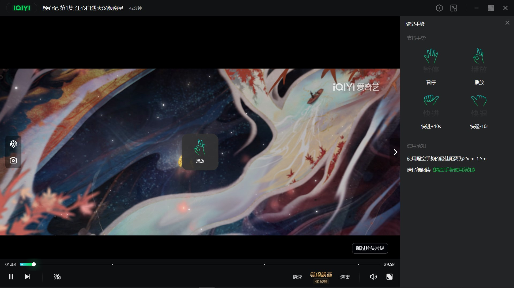
v9.6.158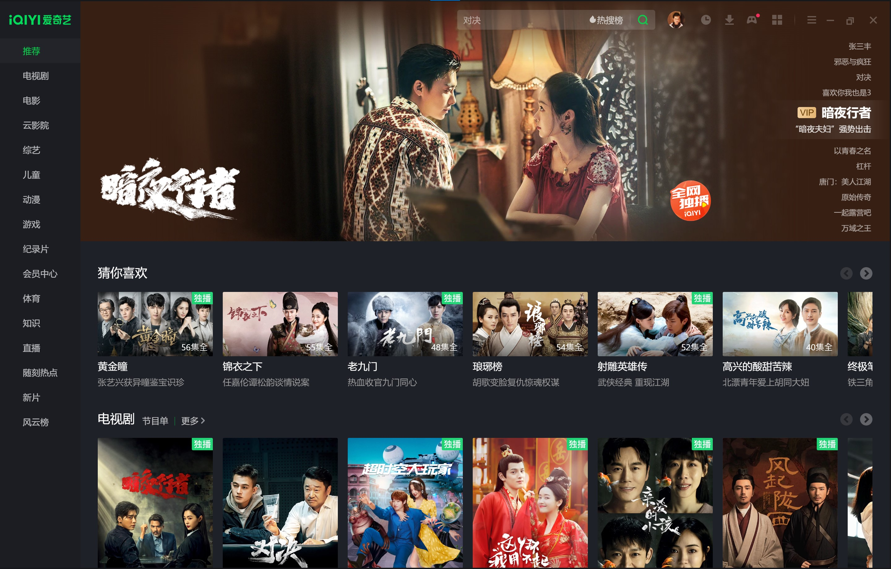
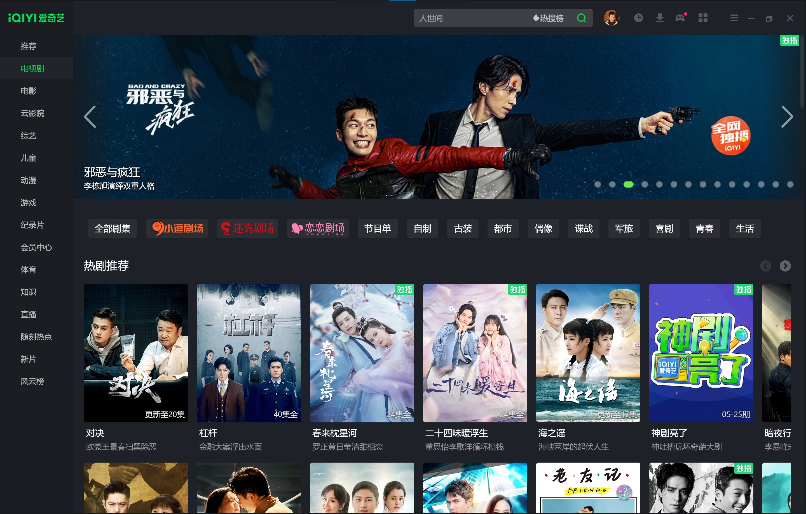
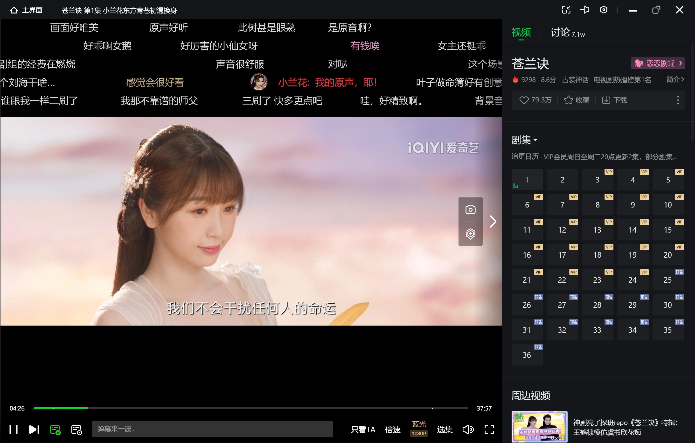
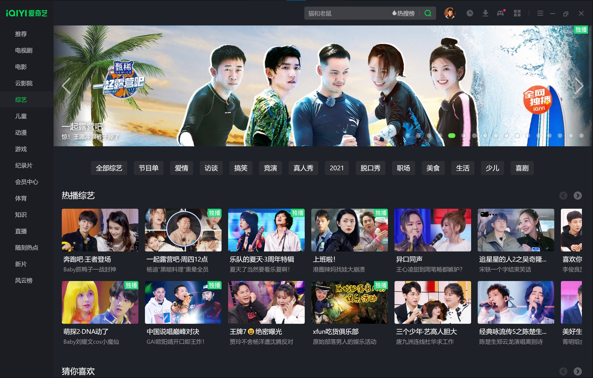
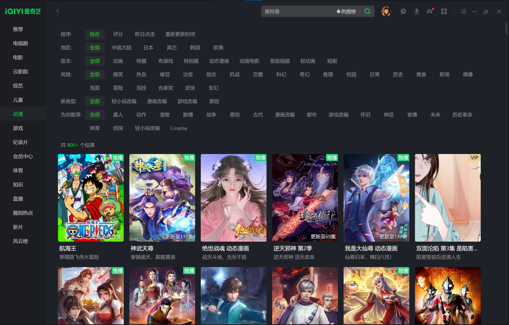